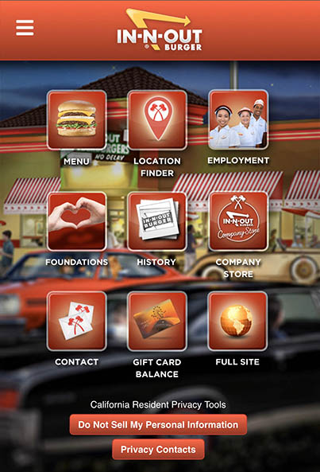

Hicks Law
Trivago

Hicks Law of Design refers to choices. Every additional choice that you have requires additional time to make a decision. Keeping this in mind, it is easy to see that Trivago takes the guess work out of where to start. It is easy to navigate and find additional information, but the main purpose of their site is to help you find a place to stay when traveling, and that fact is clear as you look at their home page.
Repetition
In-N-Out Burger

In-N-Out Burger's website is a good example of the design principle repetition. Each icon is placed in a grid pattern that is centered, as well as evenly spaced, creating a visually pleasing design. Icons have been created that are uniform in size, and color, reinforcing the repetition on this page. Repetition in the color red, their signature color, also adds to the appeal of this design.
Alignment
Minted

Minted's website has many examples of good use of design principles. For this assignment we will focus on the left alignment of the text. Proper alignment creates interest and adds to the cleanliness of the overall design. When you view the site on a desktop, the selection options are differnt sizes and locations, but all unified by the left justified type. An excellent example of simplicity at it's best.